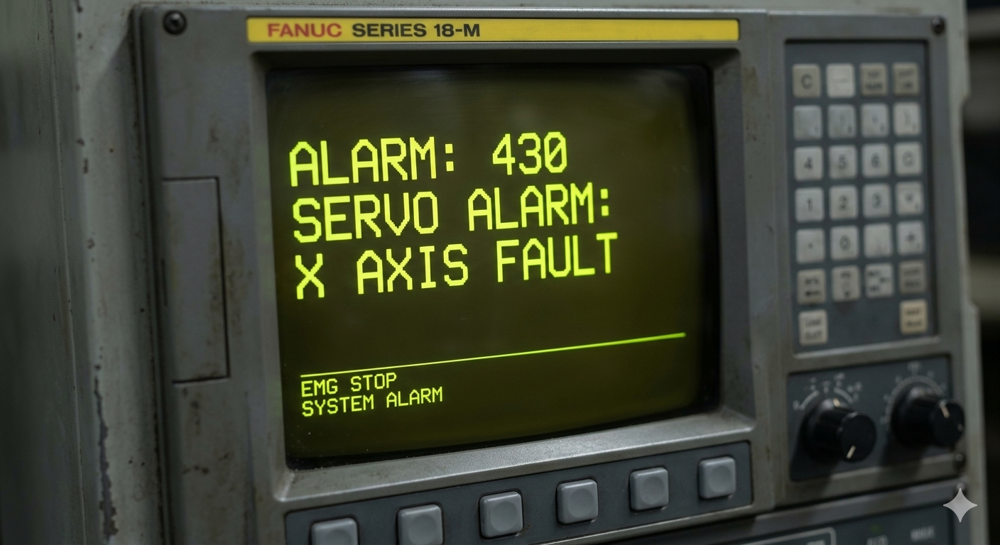
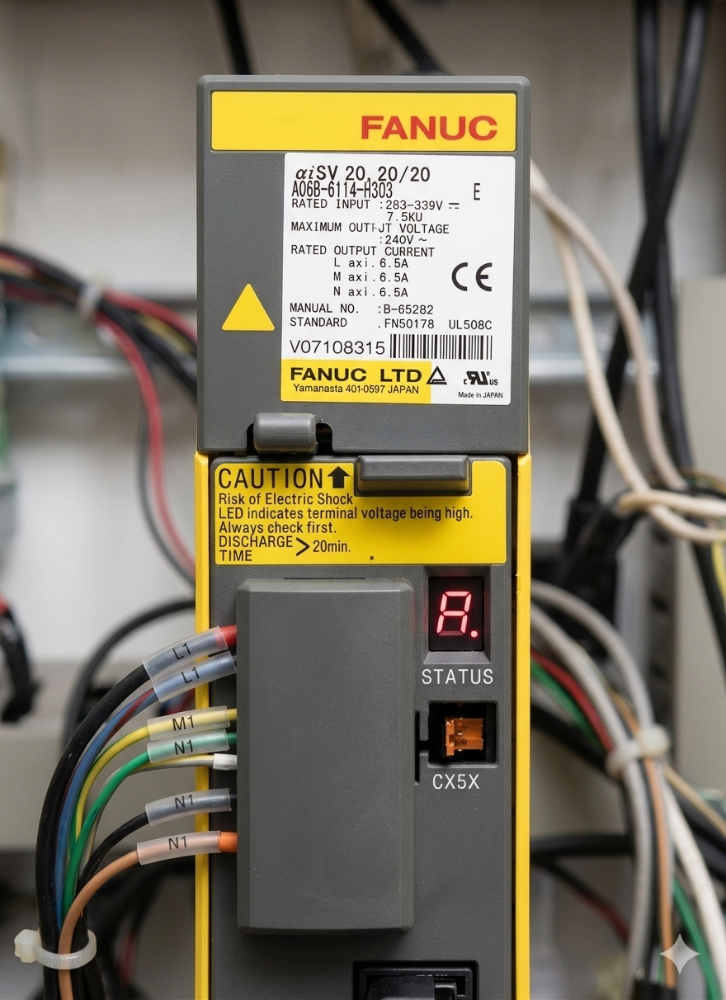

La alarma Fanuc 430: SERVO ALARM: n-AXIS FAULT

La alarma Fanuc 430 indica un fallo general en el sistema de servo del eje especificado, notificando que el servoamplificador ha detectado una condición de error que impide el movimiento.
Estado de la máquina: Parada de emergencia.
Causa: Fallo en el amplificador de servo o motor.
Solución rápida: Verificar códigos en el display del servo y cableado de potencia.
Nivel de urgencia: Alta.

Diagnóstico de Hardware: A diferencia de los errores de parámetros, la Alarma 430 suele ser un fallo de hardware. Es fundamental observar el pequeño display de 7 segmentos en el módulo de servo para identificar el código específico (como 8., 9., o A) que define la naturaleza exacta de la avería.
La alarma Fanuc 430 suele dispararse para proteger los componentes electrónicos de daños mayores. Ignorar este fallo o intentar rearmar la máquina repetidamente sin investigar la causa puede quemar el módulo de potencia.
"Un fallo 430 persistente puede indicar un cortocircuito que, de no corregirse, dañará permanentemente el Servo Amplifier."
Consecuencia: Necesidad de sustitución completa del módulo de servo, reparación de bobinados de motor o sustitución de costosos cables de potencia.
Se recomienda verificar el aislamiento del motor y el estado de los ventiladores del módulo antes de proceder.
📞 Contacte con servicio técnico.